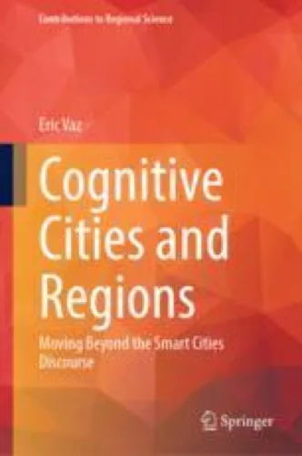

Cities and regions as complex adaptive systems.
The Spatial Intelligence Collective studies how cities grow, how regions diverge, and how habitats shift. Founded at Toronto Metropolitan University and shared with colleagues across Canada and beyond, it works with geocomputation, GeoAI, spatial statistics and econometrics, and a growing line in quantum approaches to spatial optimization.
- 90+ peer-reviewed articles
- 7 Springer volumes
- 14 universities
Research
Five lines of work, one question: how would a place respond if the rules changed?
- GeocomputationCellular automata, Markov chains, and agent-based models for simulating urban and land-use change at regional scale.
- Spatial analysisSpatial statistics, GIScience, and spatial econometrics, from autocorrelation to gravity models and landscape metrics.
- GeoAI and machine learningMachine learning, self-organizing maps, and spatial regressions for prediction, pattern recognition, and decision support.
- Complexity scienceEmergence, networks, spatial equilibria, and adaptive behaviour in regional and urban systems.
- Quantum computing EmergingQuantum machine learning and quantum-enhanced spatial econometrics for optimization and environmental modelling.
Selected work
- 2026Regional and Urban Change and Geographical Information Systems and Science: An Analysis of Northern Canada
- 2026Adaptive multi-criteria ecotopes: a memory-embedded cellular automata framework
- 2024Quantum machine learning in spatial analysis: a paradigm shift in resource allocation and environmental modeling
- 2021Machine learning for analysis of wealth in cities: a spatial-empirical examination of wealth in Toronto
People
A shared home for spatial thinking across universities.
- 20 fellows
- 17 universities
- 8 countries
- 9 disciplines
Members range from assistant to emeritus professors in geography, planning, geomatics engineering, remote sensing, information management, computing science, business, economics, and nursing, at universities in Canada, the United States, the United Kingdom, Brazil, Portugal, Germany, Denmark, and Hong Kong. That breadth lets the Collective build and fund research across disciplines and across borders.
Lead
- Eric VazPrincipal Investigator · Full Professor, Department of Geography and Environmental Studies, Toronto Metropolitan University
Fellows 20
- Godwin ArkuFull Professor · Western University
- Honorary fellow · Professor Emeritus · University College London Michael Batty is Emeritus Bartlett Professor of Planning at University College London and Chair of the Centre for Advanced Spatial Analysis (CASA). He is a graduate of the University of Manchester in Town and Country Planning and of the University of Wales Institute of Science and Technology in Architecture, where he was Professor of Town Planning and Dean in the 1980s. He was Director of the National Center for Geographic Information and Analysis (NCGIA) at SUNY-Buffalo from 1990 to 1995 before he set up CASA at UCL. He is a Fellow of the British Academy, the Royal Society, the Academy of Social Sciences, and the Royal Town Planning Institute, and he was elected a foreign Academician of the Chinese Academy of Sciences in 2023 and the Indian National Science Academy in 2025. He has worked on computer models of cities and their visualisation since the 1970s. His recent books are Cities and Complexity (2005), The New Science of Cities (2013), Inventing Future Cities (2018), and The Computable City (2024), all from The MIT Press. His edited book Urban Informatics (Springer, 2021) reflects his focus on digital and geospatial technologies in urban planning, and he co-authored A Digital Future for Planning, the report of the Digital Task Force for Planning (2022).
- Fábio BreunigAssociate Professor · Universidade Federal do Paraná
- Luís Serra CoelhoFull Professor · Universidade do Algarve
- Suzana DragicevicFull Professor · Simon Fraser University
- Victoria FastAssociate Professor · University of Calgary
- Suzanne FredericksFull Professor · Toronto Metropolitan University
- Murtaza HaiderFull Professor · University of Alberta
- Jamal Jokar ArsanjaniFull Professor · Aalborg University
- Jinhyung LeeAssociate Professor · Western University
- Songnian LiFull Professor · Toronto Metropolitan University
- Xintao LiuAssociate Professor · The Hong Kong Polytechnic University
- Raktim MitraFull Professor · Toronto Metropolitan University
- Marco PainhoFull Professor · NOVA Information Management School, Universidade Nova de Lisboa
- Liliana PerezFull Professor · Université de Montréal
- Honorary fellow · Full Professor · Clark University Robert Gilmore Pontius Jr is Professor in the Graduate School of Geography at Clark University, where he has taught since 1998. He holds a PhD in Environmental Science from the State University of New York College of Environmental Science and Forestry and a Master of Applied Statistics from The Ohio State University. He creates quantitative methods for GIScience, remote sensing, and statistics, among them quantity and allocation disagreement, Intensity Analysis, and the Total Operating Characteristic, and several of these methods are built into the TerrSet software, formerly IDRISI. He was a Fulbright Scholar in Brazil in 2022 to 2023. His book Metrics That Make a Difference: How to Analyze Change and Error (Springer, 2022) brings these methods together for students and researchers.
- Greg RybarczykFull Professor · University of Michigan-Flint
- Alysha van DuynhovenAssistant Professor · Wilfrid Laurier University
- Michael WidenerFull Professor · University of Toronto
- Alexander ZipfFull Professor · Heidelberg University
Doctoral researchers 2
- Teagan SoniPhD student, Environmental Applied Science and Management, Toronto Metropolitan UniversityMigration, demographics, and settlement across North America and India, and how climate, environmental, and socioeconomic conditions shape human mobility.
- Anastasiia SmirnovaPhD student, Environmental Applied Science and Management, Toronto Metropolitan UniversityHow urban environments and transportation infrastructure shape cycling safety, with attention to equity of access and data representativeness.
The Collective's magazine

Space, place, and imagination.

About the magazine
STRANGE explores space, place, and imagination through essays, images, letters, and conversations. It welcomes short reflections as well as longer contributions, and it gives the stranger problems of spatial analysis a place to be thought through in public.
Masthead 15
- Eric VazDirector
- Teagan SoniEditorial manager
Editorial board
- Fábio BreunigAssociate Professor · Universidade Federal do Paraná
- Luís Serra CoelhoFull Professor · Universidade do Algarve
- Suzana DragicevicFull Professor · Simon Fraser University
- Victoria FastAssociate Professor · University of Calgary
- Suzanne FredericksFull Professor · Toronto Metropolitan University
- Murtaza HaiderFull Professor · University of Alberta
- Jamal Jokar ArsanjaniFull Professor · Aalborg University
- Songnian LiFull Professor · Toronto Metropolitan University
- Xintao LiuAssociate Professor · The Hong Kong Polytechnic University
- Raktim MitraFull Professor · Toronto Metropolitan University
- Liliana PerezFull Professor · Université de Montréal
- Greg RybarczykFull Professor · University of Michigan-Flint
- Alysha van DuynhovenAssistant Professor · Wilfrid Laurier University
Further board members to be announced. Submission details to follow.
Books
Everything flows.
Recent books by members of the Collective. Each takes up a question we keep returning to: how cities and regions change, and how we can model and measure that change.
-

Forthcoming
Cognitive Cities and Regions
Eric Vaz · Springer, 2027
Cities and regions as adaptive systems that learn, with people at the centre of urban governance.
-

Book
The Computable City
Michael Batty · The MIT Press, 2024
How computers have changed the way we model and plan cities, and where that may lead next.
-

Book
Metrics That Make a Difference
Robert Gilmore Pontius Jr · Springer, 2022
Clear metrics for comparing maps and for judging how well models of land change perform.
Fellows can add a recent book of their own by writing to Eric.
News
- 2026Work begins on STRANGE, the Collective's magazine of space, place, and imagination.
- 2026Regional and Urban Change and GIScience: An Analysis of Northern Canada published by Springer.
- 2025Appointed to the Editorial Board of Humanities and Social Sciences Communications (Springer Nature).
Data
- 2026NAEUP: North American Ethnic-Group Urban Panel
- 2026Place, Affect, and Creative Labour in Mozart's Correspondence
- 2026Agentic GeoAI bibliometric corpora
- 2020Historic Ontario road, rail, municipality, county, and district shapefiles
The Collective's geospatial data platform lives at geo-data.io.
Contact
Jorgenson Hall, JOR-620
Department of Geography and Environmental Studies
380 Victoria Street, Toronto, ON M5B 2K3